CONCEPT WEBTOON · 제안용
밥은 먹었니
2026 춘천막국수닭갈비축제 홍보 캠페인 콘셉트 웹툰 · STONEKIDS
기획·각본·연출·AI 프로덕션 (주)스톤키즈
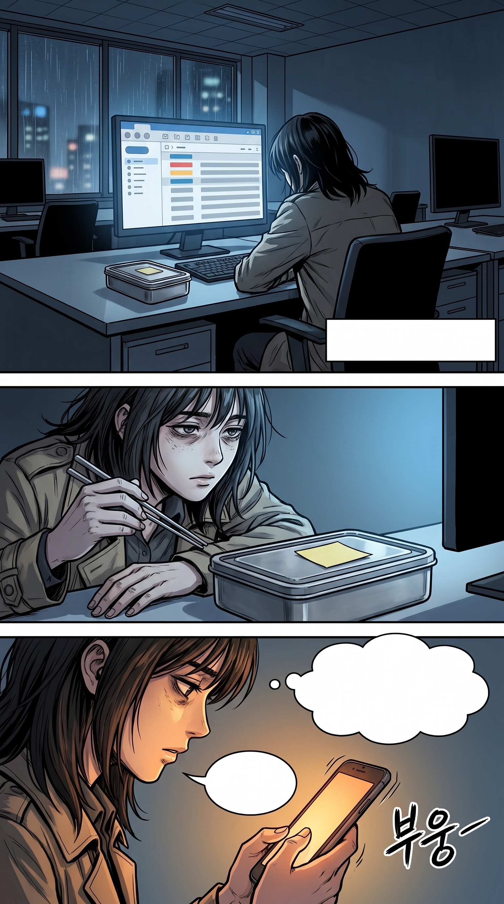
언제부터였을까.
밥이 그냥 일이 된 건.
나 장사 나왔다.
밥은 먹었니.
…할머니가 그러면,
그건 와서 먹으란 거다.
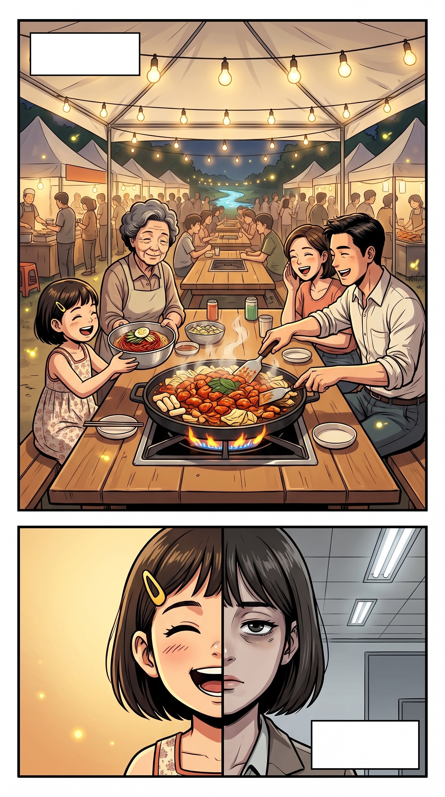
여름마다, 나는
할머니 곁에서 자랐다.
똑같은
얼굴인데,
밥 앞에서만,
다른 사람이 됐다.
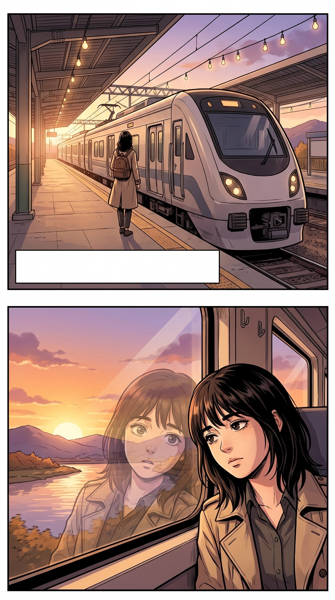
답장 대신, 몸이 먼저 와 있었다.
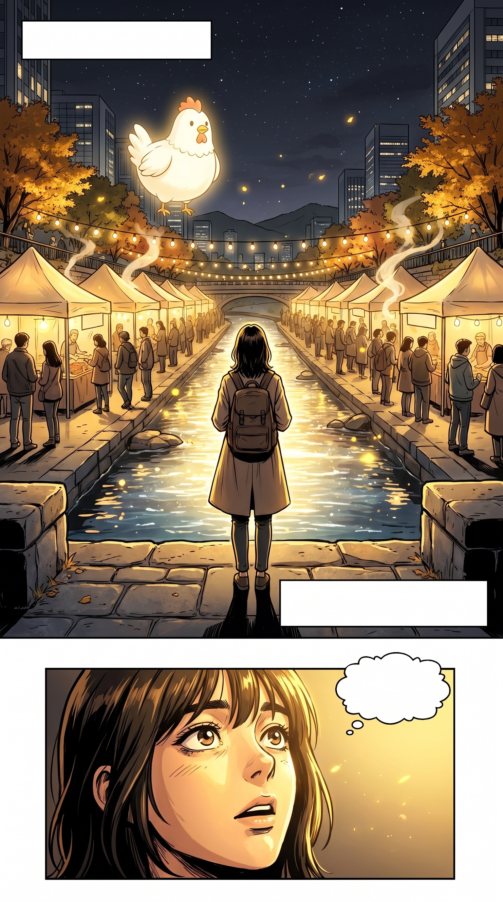
빛이, 파도처럼 밀려왔다.
너무, 오랜만이었다.
…여기,
이렇게 컸었나.
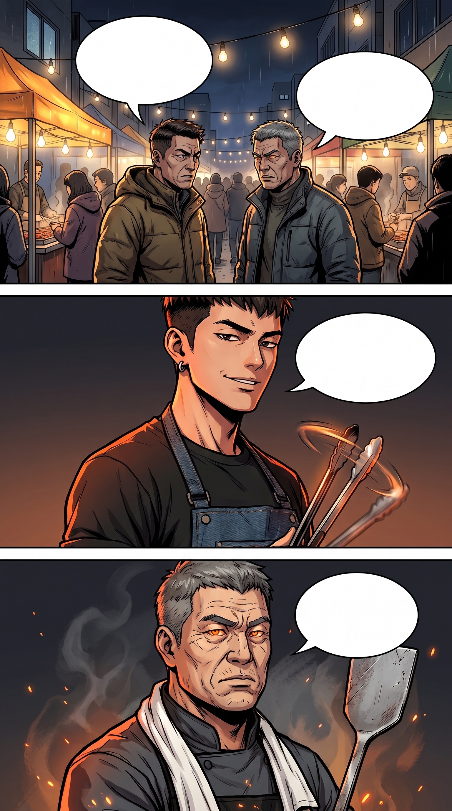
— 여기서부터, 지우의 상상 속 맛 서바이벌 —
올해 라인업
장난 아니라던데.
철판만 수십 년 잡은
사람이 직접 나왔대.
요즘 손님들은
안 기다려요,
어르신.
우리 집 앞에서
30년을 기다린
사람들한테, 가서
그 얘기 해봐라.
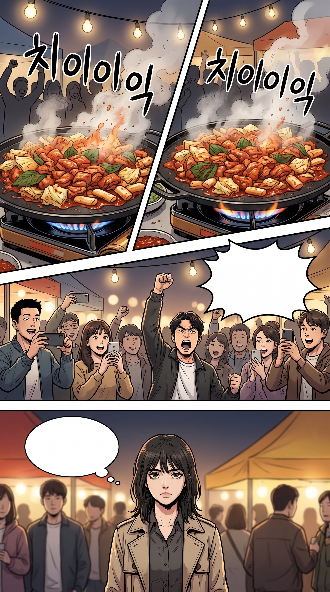
우와아—
시작한다!!
…근데 나,
왜 맨 앞에 서 있지.
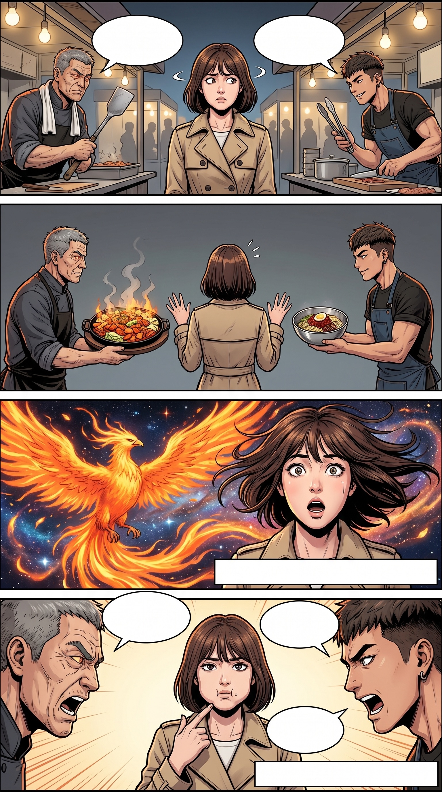
저 손님 얼굴 봐라.
오늘 첫 끼다, 분명.
…모셔 와야겠군.
〔심사위원, 판정 중…〕
어느 쪽이!
어느 쪽입니까!
…둘 다
주세요.
〔승부 무효 · 전원 합격〕
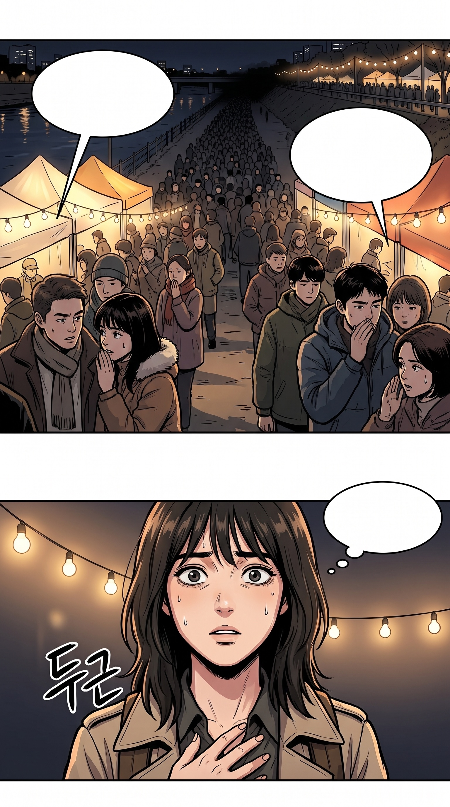
진짜는 저 끝 할머니래.
간판도 없는데 줄 끝이 안 보여.
다들 마지막엔
저쪽으로 간대.
…할머니?
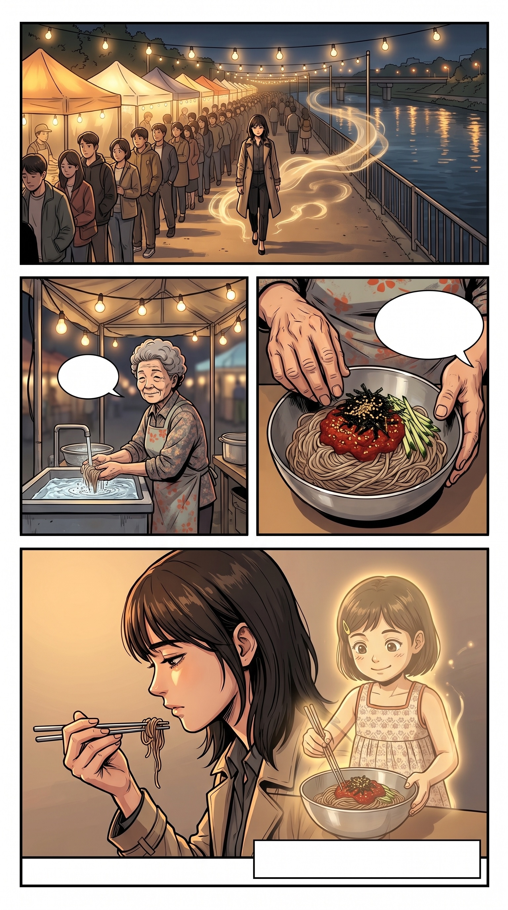
……왔나.
비벼라.
니가 좋아하던 대로.
맛은, 돌아갈 수 있는 기억이다.
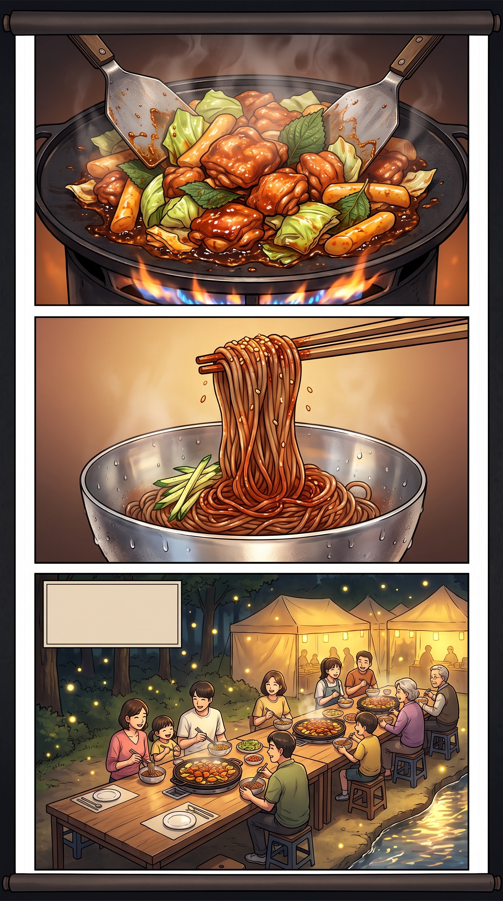
철판이 달궈지는 동안
그릇은 차가워진다.
공지천의 저녁은
그렇게 완성된다.
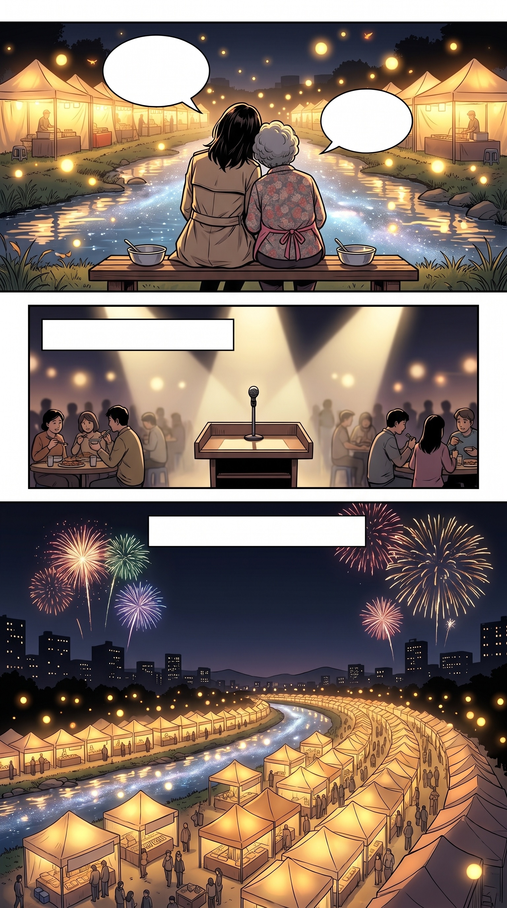
응. 또 올게.
많이 먹었나.
〔우승자는? — 판정은 내년으로 연기됐습니다〕
막 와도 됩니다, 공지천.
2026 춘천막국수닭갈비축제 · 10.14–18
2026 춘천막국수닭갈비축제
2026.10.14(수) – 10.18(일) · 공지천 산책로 일대
공식 정보 mdfestival26.imweb.me · 주차 혼잡, 대중교통 이용 권장
STONEKIDS
「밥은 먹었니」 — 막닭 파이터 유니버스 콘셉트 웹툰
가상 인물과 생성형 영상 기술로 제작했으며, 춘천 지역 제작진이 음식·장소를 감수했습니다